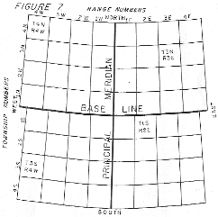
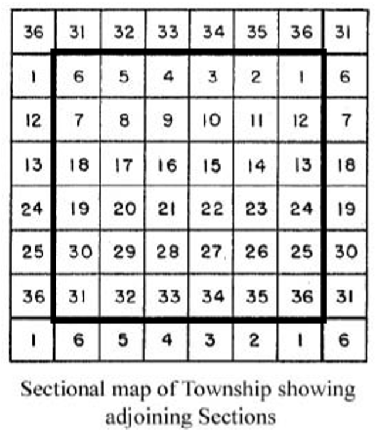
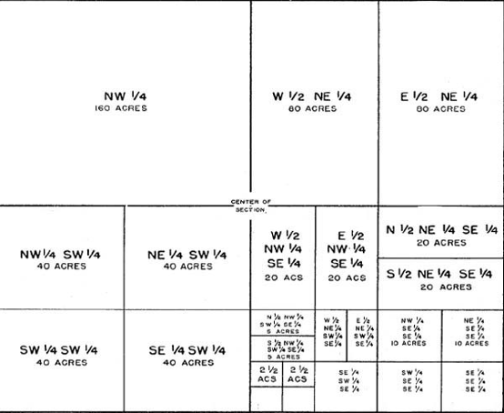
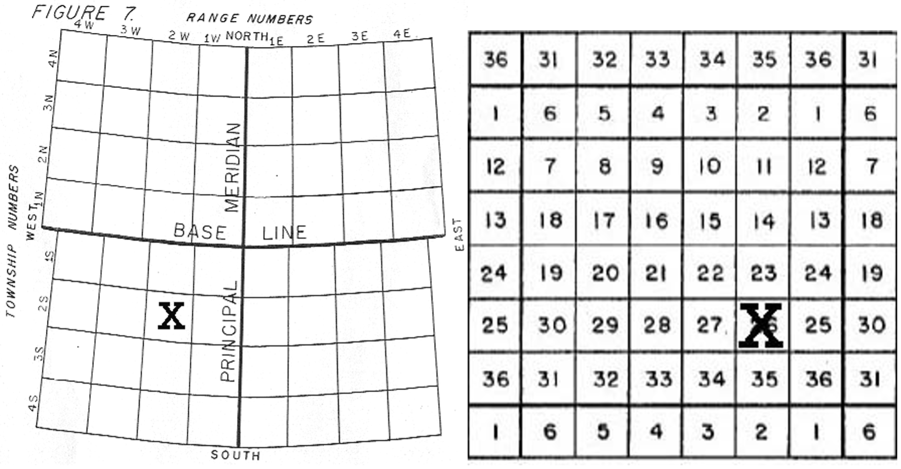
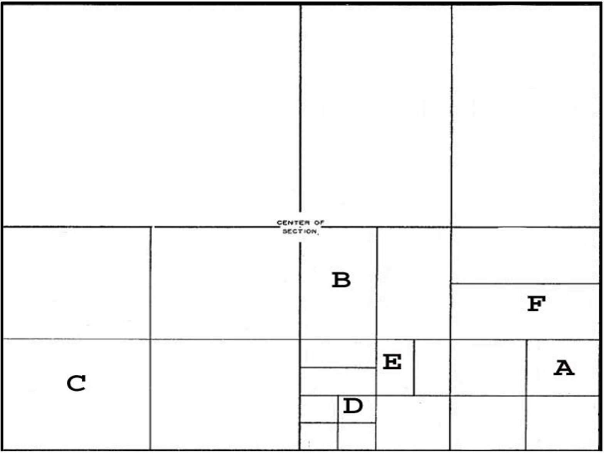
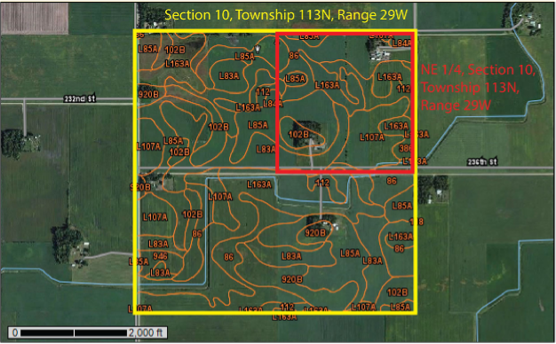

| Label | Subdivision of Section | Section | Township | Range | Acres |
| A | |||||
| B | |||||
| C | |||||
| D | |||||
| E | |||||
| F |
11 Legal Land Descriptions and Soil Survey
Objectives
- Understand components of a soil survey.
- Use a legal land description to identify parcels of land.
Key Words & Concepts
- Township
- Range
- Principal meridian
- Section
- Soil mapping unit
- Soil name
- Geographic information systems
11.1 INVESTIGATION A: Legal Land Descriptions
A legal description/land description is the method of locating and describing land in relation to the public land survey system. Land is broken down into areas called townships. Townships are approximately 6 square miles and are divided into 36 sections (each section being approximately 640 acres). Townships have two designators:
- A Township designator (T) that describes the distance and direction (north or south) from the Baseline, and
- A Range designator (R) that describes the distance and direction (east or west) from the Principal Meridian.
Townships highlighted (with numbers written in the center) in Figure 7 include:
- T4N, R4W
- T3N, R3E
- T1S, R2E
- T3S, R4W
The number after the T (township) gives the number of townships N or S of the Baseline, while the number after the R (range) gives the number of townships E or W of the Principal Meridian.

Sections in each township are numbered consecutively beginning with number 1 in the northeast corner of the township and counting from right to left then left to right and so on, weaving back and forth through the sections of the township in a serpentine manner, and ending with number 36 in the southeast corner.
Additionally, sections may be broken into any number of parcels or divisions. When you write a legal description, always start with the smallest division first and proceed in steps to the largest division. When you are attempting read a legal description to find a parcel of land, do the opposite: start with the largest division first, then proceed to the smallest, reversing the order in which the legal description is written.




Practice writing legal land descriptions by describing areas A through F below. Make sure you include Township, Range, and Section designators shown by the X’s on the maps above.
11.2 INVESTIGATION B: Using Web Soil Survey to Make Land-use Recommendations
HYPOTHETICAL SITUATION: The College of Food, Agricultural, and Natural Resource Sciences has received funding to build a new research, learning, and outreach center. An alumnus of SOIL 2125 has offered a quarter section of land in Sibley County, Minnesota as a possible location of a new center. The legal land description is NE1/4 of Section 10, T113N, R29W, 5th Principal Meridian. The following questions need to be answered to assess this piece of property.
- Go to Web Soil Survey: http://websoilsurvey.sc.egov.usda.gov/App/HomePage.htm
- Click the green button to start WSS.
- Under “Quick Navigation” in the menu bar on the left, click on PLSS (Section, Township, Range).
- Enter the information for the property given in the first paragraph, above (i.e., Minnesota, 5th Principle Meridian, Section 10, Township 113N, Range 29W), and click “View”.
- WSS will take you directly to that section.
- Define the AOI for the parcel. Remember, the property is only the NE ¼ of the section.
- Once the AOI is defined, click on the “Soil Map” tab to view the Soil Map.
- Check to ensure you have identified the right parcel by comparing it to the figures on the last page of this document.
- Use information from properties and interpretations under the “Soil Data Explorer” tab to fill in the table below for each map unit. Navigate to each item then click “View Rating”.
11.2.0.1 Inventory of Soils in NE 1/4 of Section 10
To assess the property, an inventory of soil map units was done. Now the usefulness of these soils for proposed construction and other uses and activities is needed. Double check you have the right location with this figure:

Use the properties and interpretations from each of the map units given in Web Soil Survey to fill in the following table. The following information shows you where to find that piece of information in Web Soil Survey menus:
Suborder: >Suitability & Limitations for Use >Land Classification >Soil Taxonomy Classification
Small Commercial Buildings: >Suitability & Limitations for Use >Building Site Development >Small Commercial Building
Paths and Trails: >Suitability & Limitations for Use >Recreational Development >Paths and Trails
At-Grade Septic: >Suitability and Limitations for Use >Sanitary Facilities >Septic Tank Absorption Fields >At-Grade (MN)
Farmland of Statewide Importance: >Suitability and Limitations for Use >Land Classifications >Farmland Classifications
| Symbol | Soil Order | Suborder | Small Commerical Buildings | Paths and Trails | At-Grade Septic | Farmland of Statewide Importance |
| 86 | Canisteo clay loam | |||||
| 102B | Clarion loam | |||||
| 386 | Okoboji mucky silty clay loam | |||||
| L83A | Webster clay loam | |||||
| L84A | Glencoe clay loam | |||||
| L85A | Nicollet clay loam | |||||
| L107A | Canisteo- Glencoe complex, depressions | |||||
| L163A | Okoboji silty clay loam, depressions |
The College would like to construct the facilities listed in the table below. Indicate in the table on what soil map unit(s) in this piece of land you would locate each. Include the symbol and soil series for each unit as listed in the previous table. Ignore existing building locations in your choices as the College wishes to make the best possible land-use choices in each case, regardless of current development.
Make suitability determinations based on the Soil Survey data alone.
| Facility | Most suitable soil map unit(s) and soil series names |
| Plant, Animal, and Environmental Science Building (small commercial) | |
| Septic system for whole unit (At-Grade Septic) | |
| Restored wetland (Aquic Suborders and/or Histosols | |
| Permanent soil pit displayed Farmland of Statewide Importance | |
| Nature and bike trail (Paths and Trails) |